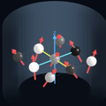
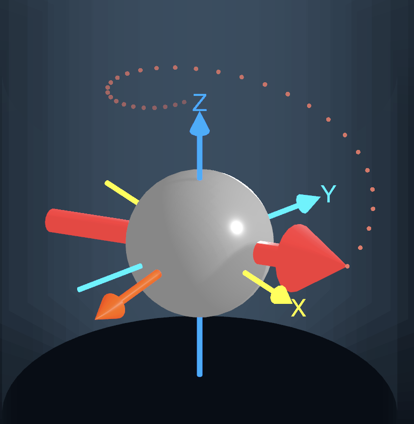
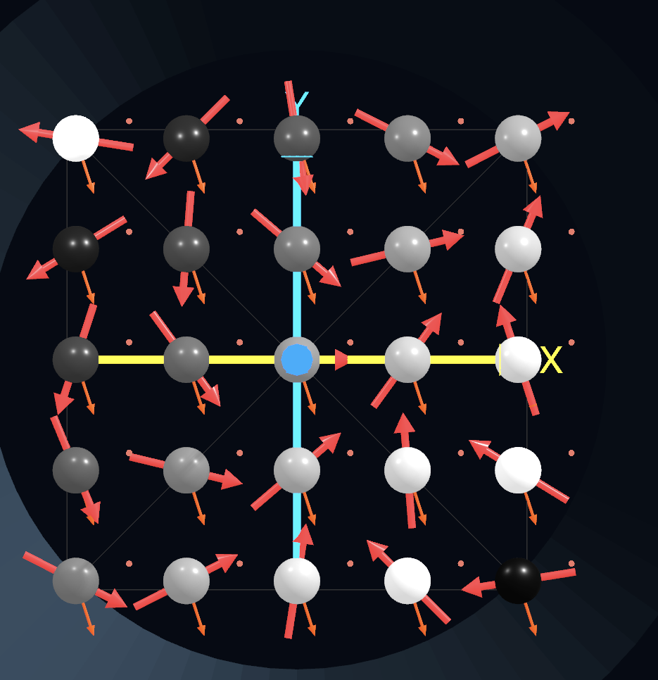
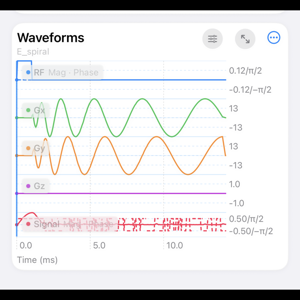
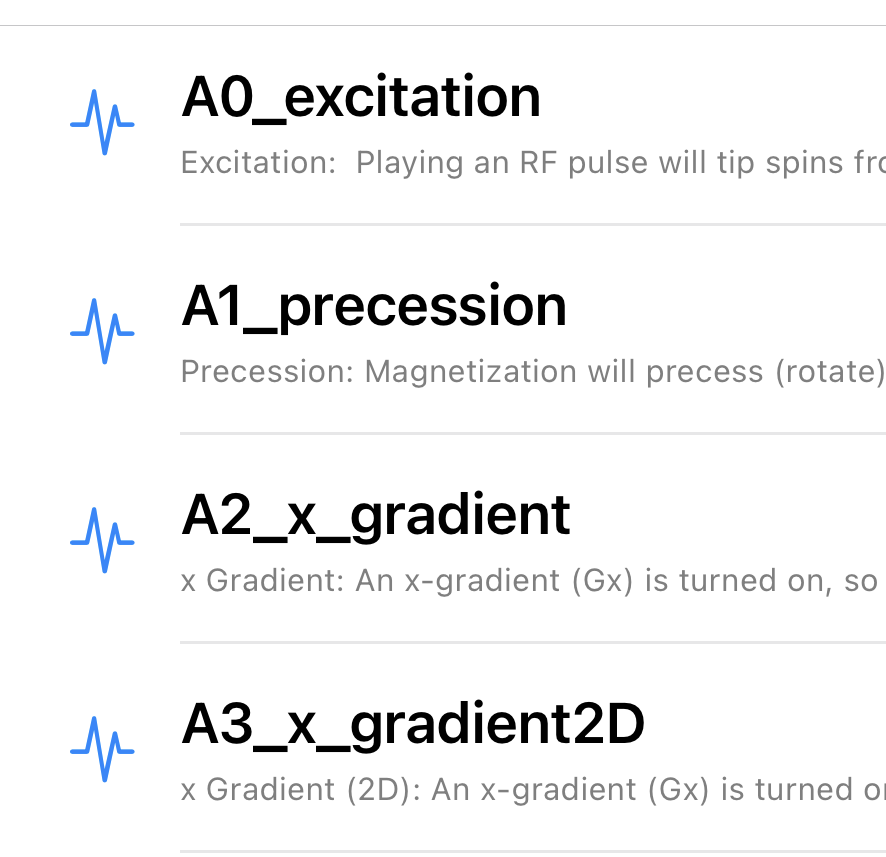
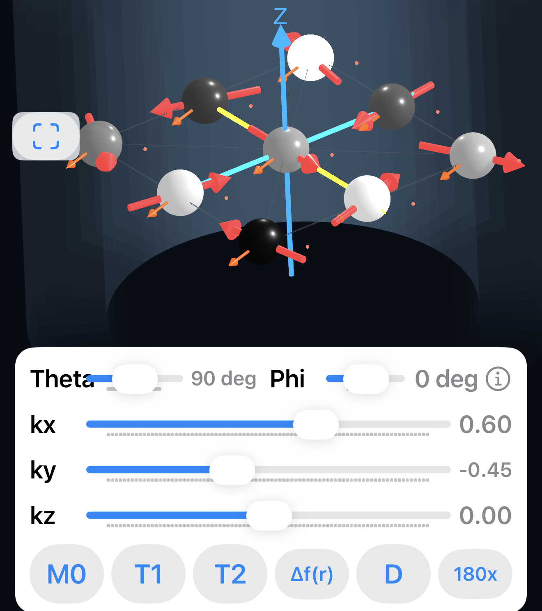
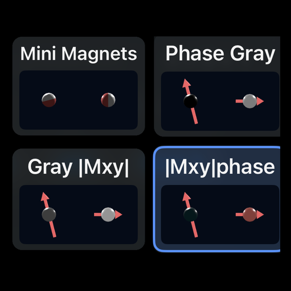
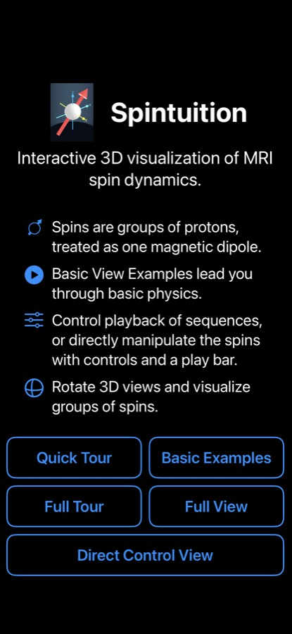

SpintuitionTMInteractive, intuitive 3D graphical representations of MRI spin dynamics to aid in teaching, learning and interpretation. Use this form to send feedback and ideas to help teach MRI principles, or sign up as an early tester for new updates. All code will be shared through GitHub soon.
Beginning with a quick tour and basic examples, you can advance to view RF and gradient
waveforms, directly control RF/gradients, or directly manipulate the spins themselves for
illustration. Spins are rendered as 3D vectors, and Pulseq sequences (.seq) can
be loaded and displayed for compatibility with other tools.
Highlights

Guided examples
A built-in series walks from polarization and precession through gradients, encoding, selective excitation, spin echoes, and on to EPI, spiral, CPMG and bSSFP.

3D vector array
Regular or custom X×Y×Z lattice of spins over a 25 cm FOV. Zoom, rotate or snap to axial / sagittal / coronal views. Edit individual spin locations and properties.

Pulseq compatible
Load a Pulseq .seq file, and use optional # Simmr… comment
directives to set visualization options (matrix, relaxation, view and more) or specify
arbitrary scan objects.

Waveforms
RF, Gx, Gy, Gz and signal waveforms with a scrubbable timeline. Record your own waveforms with live sliders, then save or export them.

Direct control
Set spin angles and k-space phase directly, apply relaxation, off-resonance, diffusion and 180° pulses — a quick way to demonstrate a spin echo.

Rendering options
Rendering options to show spin/signal magnitude and/or phase, and options including averages, B1, lab/rotating frame and trails.
Getting started
On launch, the welcome screen offers several entry points:
- Quick Tour — a short guided introduction to the controls.
- Basic Examples — step through the introductory physics examples.
- Full Tour — a complete walkthrough of the Full View.
- Full View — spins, waveforms and playback together.
- Direct Control View — manipulate spins directly.
The welcome screen can be skipped in future, and shown again from Settings.
In the Waveforms panel, you can also use the controls icon to turn on RF and gradients manually.
